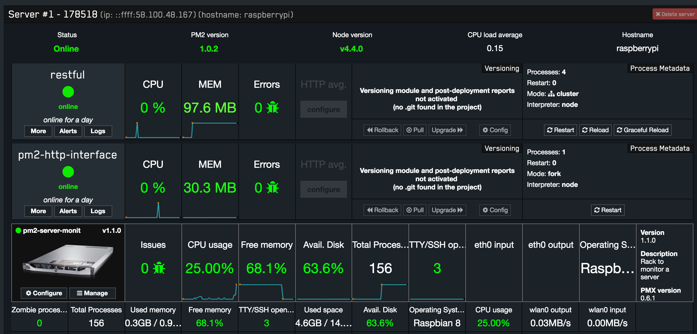

运用keymetrics实时监控Node.js
node-dev 用于开发环境可以实现修改JS后自动重启
pm2在生产环境可以保持node.js永久在线。pm2通过keymetrics能实时监控node.js的运转，到达监控node.js的目标。
安装pm2
npm install -g pm2 node-dev
启动
node-dev koa.js
pm2 start koa.js -i max --name 178518
pm2 web
pm2常用命令
$ pm2 start app.js -i 4 #后台运行pm2，启动4个app.js
# 也可以把'max' 参数传递给 start
# 正确的进程数目依赖于Cpu的核心数目
$ pm2 start app.js --name my-api # 命名进程
$ pm2 start restful.js -i max --name restful
$ pm2 list # 显示所有进程状态
$ pm2 monit # 监视所有进程
$ pm2 logs # 显示所有进程日志
$ pm2 stop all # 停止所有进程
$ pm2 restart all # 重启所有进程
$ pm2 reload all # 0秒停机重载进程 (用于 NETWORKED 进程)
$ pm2 stop 0 # 停止指定的进程
$ pm2 restart 0 # 重启指定的进程
$ pm2 startup # 产生 init 脚本 保持进程活着
$ pm2 web # 运行健壮的 computer API endpoint (http://localhost:9615)
$ pm2 delete 0 # 杀死指定的进程
$ pm2 delete all # 杀死全部进程
运行进程的不同方式：
$ pm2 start app.js -i max # 根据有效CPU数目启动最大进程数目
$ pm2 start app.js -i 3 # 启动3个进程
$ pm2 start app.js -x #用fork模式启动 app.js 而不是使用 cluster
$ pm2 start app.js -x -- -a 23 # 用fork模式启动 app.js 并且传递参数 (-a 23)
$ pm2 start app.js --name serverone # 启动一个进程并把它命名为 serverone
$ pm2 stop serverone # 停止 serverone 进程
$ pm2 start app.json # 启动进程, 在 app.json里设置选项
$ pm2 start app.js -i max -- -a 23 #在--之后给 app.js 传递参数
$ pm2 start app.js -i max -e err.log -o out.log # 启动 并 生成一个配置文件
你也可以执行用其他语言编写的app ( fork 模式):
$ pm2 start my-bash-script.sh -x --interpreter bash
$ pm2 start my-python-script.py -x --interpreter python
pm2 list 列出由pm2管理的所有进程信息，还会显示一个进程会被启动多少次，因为没处理的异常。

pm2 monit 监视每个node进程的CPU和内存的使用情况。

安装Keymetrics
需求注册Keymetrics
登录后并new bucket，进入控制面板，看到分配的public key 和secret key。输出以下命令：
安装监控服务器模块
Ports 80 (tcp out) and 43554 (tcp in/out) must be opened
pm2 install pm2-server-monit
pm2 link your-secret-key your-public-key 178518
监控成功，会有类似的提示：
[Keymetrics.io] [Agent created] Agent ACTIVE - Web Access: https://app.keymetrics.io/
此时，pm2会把搜集到的统计信息实时的推送到Keymetrics，我们可以在Keymetrics的中实时的查到node.js的运行信息。
